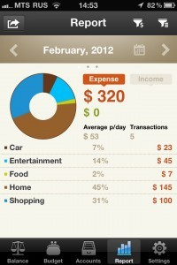
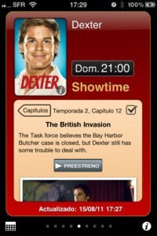
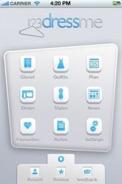
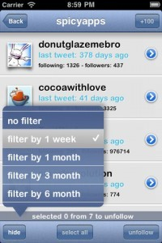
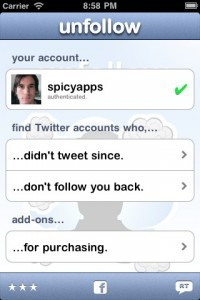
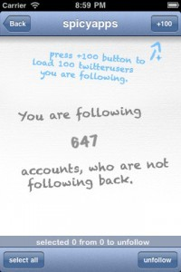
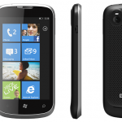
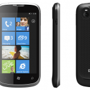

Aplicaciones iPhone de la semana: Money IQ, Photo Studio, TV Show Tracker, 123DressMe, DishPal y Unfollow for twitter
Aplicaciones iPhone de la semana: Money IQ, Photo Studio, TV Show Tracker, 123DressMe, DishPal y Unfollow for twitter
Ya estamos aquí otra semana mas con las mejores aplicaciones iPhone de la semana. Esta semana no va a faltar de nada: aplicaciones para controlar nuestros gastos, para retocar fotografías, para no perderte ninguna de tus series favoritas, descubrir quien deja de seguirte en Twitter y mucho más! Siguiendo ya a la tradición semanal de [...]
Ya estamos aquí otra semana mas con las mejores aplicaciones iPhone de la semana. Esta semana no va a faltar de nada: aplicaciones para controlar nuestros gastos, para retocar fotografías, para no perderte ninguna de tus series favoritas, descubrir quien deja de seguirte en Twitter y mucho más!
Siguiendo ya a la tradición semanal de aplicaciones curiosas y útiles para tí que estás al tanto de todo lo nuevo y quieres que tu teléfono sea tu herramienta para todo. Vamos a ver si lo conseguimos, esperemos que os guste esta nueva e interesante entrega de lo mejorcito de la semana.
Money IQ

Si llevas tiempo buscando la aplicación perfecta para llevar tus cuentas Money IQ no te defraudará. Money IQ cuenta con un diseño muy cuidado y con múltiples opciones para llevar nuestras cuentas controladas y al día. Money IQ nos va a permitir crear varias cuentas y asignarle a cada una la moneda que queramos tanto euros como libras, dólares, etc. Nos mantiene informado en la pantalla principal de los gastos y ingresos del mes, los saldos en todas nuestras cuentas y añadir desde la misma pestaña inicial los gastos o ingresos que hayamos echo ese día.
Money IQ nos va a permitir definir presupuestos mensuales, trimestrales, semestrales.. Consultar los informes por categorias con gráficas, sin gráficas o incluso tendremos acceso directo a los gastos de la categoría que nos interese desde los mismo informes de la aplicación.
Lástima que le falte la versión para Ipad, aunque en su web pone que no lo descartan para un futuro, esperemos que sí y que sea con sincronización en la nube, sería una gran noticia.
La podrás descargar en la App Store por 3.99 euros (ahora mismo está de oferta a 2.39 euros) O si lo prefieres puedes probarla en su versión Lite totalmente gratuita (con un límite de 100 transacciones)
Photo Studio
Photo Studio es una aplicación de retoque fotográfico que nos va a permitir aplicar mas de 194 efectos distintos a nuestras fotos. La aplicación además nos va a permitir modificar parámetros como el contraste, opacidad, saturación, brillo, color, etc. También podemos añadir etiquetas con texto, tiene integración con Instagram y podrás añadir en favoritos los efectos que mas utilizes para que no tengas que buscarlos cada vez que quieras utilizar un efecto o varios en concreto.
Una vez tengamos la foto retocada podemos compartirla directamente a facebook, twitter, flickr, mail, tumblr, instagram o si lo preferimos, guardarla en nuestro carrete de fotos o imprimir la foto. Sin duda una gran opción a tener en cuenta si somos muy asiduos a tomar y retocar muchas fotografías con nuestro Iphone o Ipad.
La encontrarás en la App Store por 0.79 euros
TV Show Tracker

TV Show Tracker, es una aplicación que nos va a permitir hacer un seguimiento de todas nuestras series favoritas. Gracias a TV Show Tracker vas a poder saber cual fue el último capítulo emitido o cual va a ser el próximo que va a ser emitido en televisión. Además nos avisa vía notificación push cuando un episodio está apunto de ser emitido en TV! Por si fuera poco puedes seguir todas tus series favoritas y tenerlas todas al día y controladas gracias a las secciones Calendario, donde veremos que series de nuestras favoritas van a ser emitidas en TV los próximos días o la sección Agenda, donde podrás ver los capítulos y emisiones separados por series en lugar de por días.
A que parece interesante?? Pues por si esto fuera poco nos permite acceder a videos de próximos capítulos, a marcado de episodios como visto o no vistos y como no una introducción a a cada capítulo de las series.
Si te interesa comprar la aplicación puedes descargarla en la App Store por 1.59 euros
123DressMe

Si lo que interesa es tener controlado todo tu armario, incluyendo complementos, calzados, partes de arriba, partes abajo como tejanos, pantalones de vestir, faldas,etc. Esta es sin duda tu aplicación. Con 123DressMe vas a poder tener en todo momento lo que tienes en tu armario pero en tu Iphone, a que suena tentador?
En una misma aplicación podemos tener toda nuestra ropa fotografiada en la sección “Closet“, nuestros favoritos en “Favorites“, y lo mas importante, los conjuntos de ropa que hagamos (outfits), la aplicación nos va a permitir tal y como muestra la imagen de arriba (la captura del medio), crear conjuntos basándose en todas las fotos que hemos introducido en la aplicación, podemos crear conjuntos con la parte de arriba, pantalón, falda… y el calzado y podremos guardarlo en nuestra sección de outfits, perfecto si nos gusta tener toda nuestra ropa controlada. Además la aplicación nos permite añadir etiquetas por colores de las prendas, por temperatura, por conjuntos de trabajo, para el día a día, para la noche… Un sin fin de opciones para todos los asiduos/asiduas a la moda.
Encontrarás 123DressMe en la App Store totalmente gratis.
Dishpal
DishPal es una red social para compartir todo tipo de platos de comida, desde platos entrantes, primeros platos, postres… todo esto con un diseño y interfaz muy limpia, muy fácil y rápida de utilizar. Por un lado vamos a poder compartir esos platos que estemos degustando en ese mismo momento gracias a la cámara de fotos que va incorporada en la aplicación, donde podremos modificar el brillo, contraste, saturación, rotar la imagen… a partir de ahí ya podemos añadir información de la foto, localización, añadir etiquetas y compartir en Facebook, Twitter o incluso Tumblr.
En todo momento podremos ver los platos que se están compartiendo en esta red social sin necesidad de seguir a nadie, aunque también puedes tener tus amigos y ver solo los platos compartidos por ellos. La aplicación cuenta además con con 2 pestañas “Party” y “Magazine“, donde en “party” veremos grupos creados por temática y seguir los que mas nos interesen (cupcakes, pasta, carne….), y por otro lado, nos encontramos con Magazine donde podremos suscribirnos para recibir publicaciones personalizadas de nuestros platos favoritos y revisiones de restaurantes echas por los mismos usuarios.
Podrás descargar la aplicación gratis en la App Store.
Unfollow
  
Muchas veces nos encontramos que nos han dejado de seguir usuarios en Twitter, o que simplemente nunca nos han hecho FollowBack. Gracias a UnFollow nos va a ser posible saber quien nos a dejado de seguir o quien tiene la cuenta inactiva. La aplicación cuenta además con filtros de tiempo donde nos permite elegir si queremos saber que usuarios hace una semana, mes, tres meses o seis meses que no twittean, perfecto si queremos hacer limpieza de usuarios a los que seguimos pero que en verdad no están aportando nada para nosotros, porque, además nos permite desde la misma aplicación dejar de seguir a todo usuario de Twitter que estemos siguiendo y que ya no nos interese seguir, bien porque hace meses que no escribe o bien porque no nos sigue y preferimos dejar de seguirles.
La aplicación es gratuita y la podrás descargar en la App Store.
Y con esto damos por acaba la sección esta semana. Volvemos la semana que viene con muchas más aplicaciones para tu Iphone.


 Pero vamos con lo que nos interesa, el gasto que cada usuario hace de media en España. Todos los gastos en servicios de telecomunicaciones han descendido, pero es en telefonía móvil donde más grande ha sido esta caída, ya que cada usuario gastó 12.6€ al mes en llamadas de media (datos del segundo trimestre de 2011). La bajada del gasto respecto un año atrás es del 15%, cuando de media se gastaban 14.8€ al mes.
Pero vamos con lo que nos interesa, el gasto que cada usuario hace de media en España. Todos los gastos en servicios de telecomunicaciones han descendido, pero es en telefonía móvil donde más grande ha sido esta caída, ya que cada usuario gastó 12.6€ al mes en llamadas de media (datos del segundo trimestre de 2011). La bajada del gasto respecto un año atrás es del 15%, cuando de media se gastaban 14.8€ al mes.


 
